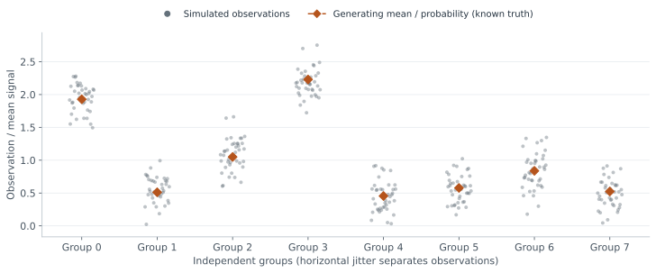
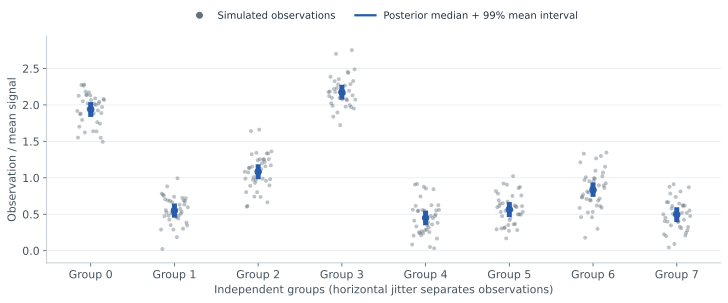
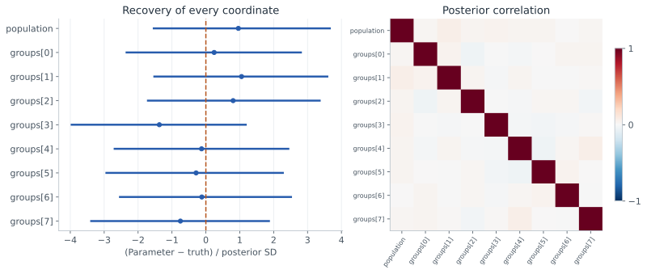
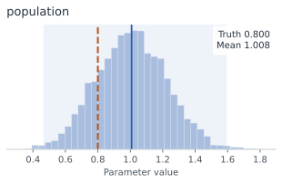
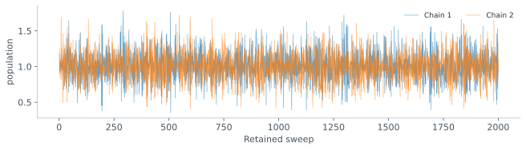

Example 03 · Hierarchical inference notebook
Infer a population mean and eight group means from repeated noisy measurements. Follow the generative model, simulated observations and posterior estimates from the inference notebook.
Model and conditional structure
The population mean μ is shared. Each group has a latent mean ug; its 40 observations share that mean. Known standard deviations are 0.6 between groups and 0.25 within a group.
Graph declaration
"""The hierarchical notebook's model. Run with: JAX_ENABLE_X64=1 python notebook_model.py"""
import jax.numpy as jnp
import numpy as np
import numpyro.distributions as dist
import bayesmith as bs
INDICES = np.repeat(np.arange(8), 40)
# Placeholder observations: the routes in the plan do not depend on their values.
DATA = jnp.asarray(np.random.default_rng(0).normal(size=INDICES.size))
def model(indices, data):
"""As recorded in the notebook run."""
index = bs.const("group_index", indices)
population = bs.sample("population", lambda: dist.Uniform(-3.0, 3.0))
groups = bs.sample(
"groups",
lambda mu: dist.Normal(mu, 0.6).expand((8,)).to_event(1),
population,
)
location = bs.det(
"location", lambda u, i: u[i], groups, index, linear_in=("groups",)
)
bs.observe("obs", lambda loc: dist.Normal(loc, 0.25), location, obs=data)
if __name__ == "__main__":
print(bs.compile(bs.trace(model, INDICES, DATA)))
This restates the recorded model. The full example also constructs truths, simulates data and runs inference.
From simulated observations to inferred signal
For this dataset, μ = 0.8. Group means were drawn from their conditional prior; observations were then simulated at those realized values. Switching views adds the inferred mean signal to the same measurements.




Infer
The recorded run sampled both latents with NumPyro NUTS. This release compiles the same declaration to exact group means inside NUTS:
| Block | Latents | Route | Why |
|---|---|---|---|
| 0 | groups | GCR exact | structurally certified; numerical check 3 scales x 3 at-points (max 0.00e+00) |
| 1 | population | NUTS | outside the exact block ['groups']: sampled by NUTS, and the exact block is solved CONDITIONAL on them, once per sweep |
| Execution | HMCGibbs(inner=NUTS, gibbs_sites=['groups']); noise_std rebuilt every sweep | ||
Printed plan
block 0 {groups} GCR exact structurally certified; numerical check 3 scales x 3 at-points (max 0.00e+00)
kappa=231.4 -> tol=4.3215212e-06, guard hoisted out of the sweep
exact block ['groups']: sigma does not move with the block (0.000e+00 relative,
rtol=1.0e-08), so the covariance is fixed and one Wiener solve is exact; the
linearity check held ['population'] at their prior centre rather than drawing
them -- they are not Gaussian, so their prior has no draw this module will
take; the kappa sweep held ['population'] at their prior centre rather than
moving them -- they are not Gaussian, so this module has no prior width to
sweep them by, and the interval is not an interval in them
block 1 {population} NUTS
outside the exact block ['groups']: sampled by NUTS, and the exact block is
solved CONDITIONAL on them, once per sweep
execution: HMCGibbs(inner=NUTS, gibbs_sites=['groups']); noise_std rebuilt every sweepnotebook_model.py. Condition numbers and tolerances in the printout depend on the BLAS; block membership and routes are re-checked by the test suite. Full record.Given the population mean, the eight group means have a Gaussian prior (written with .expand, which only broadcasts one Normal to eight independent copies), each prediction selects one of them and the noise is fixed. The population mean has a uniform prior and is an ancestor of the group prior, so NUTS moves it. The plan was compiled on placeholder observations; the routes do not depend on the observed values. The figures below come from the recorded all-NUTS run.
Population and group recovery
Repeated measurements constrain each group mean tightly. The population mean remains less precise because only eight groups inform it. Its posterior mean is 1.008 with standard deviation 0.217; the 99% interval is [0.467, 1.592], containing the generating value 0.8.




Chain diagnostics and provenance
The recorded NumPyro NUTS run retained 2,000 draws per chain after 1,000 warmup steps, with two chains and seed 0. It recorded zero divergences. Population R-hat was 1.000004. These diagnostics and the single-case recovery check do not establish simulation-based calibration.
Population chains and diagnostic values


| Quantity | Recorded value |
|---|---|
| Population ESS | 8,817.25 |
| Group-site ESS summary | 7,251.43 |
| Population R-hat | 1.000004 |
| Group-site R-hat summary | 0.999925 |
ESS estimates are preserved as recorded and can exceed the retained draw count for negatively correlated draws. See diagnostic interpretation.
These figures are a historical notebook snapshot, associated with revision 6c644b1, rather than a new run of version 0.10.0. The downloadable record includes source hashes, model nodes, parameter summaries and figure checksums. Current runnable examples begin with Example 01 · First posterior.